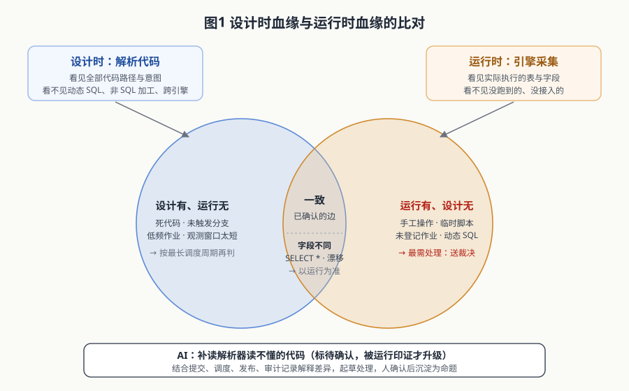
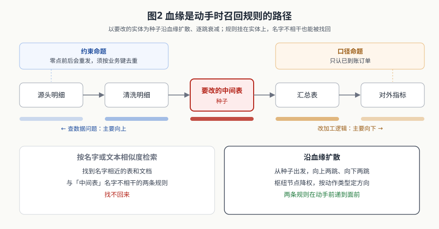

第二篇把血缘列为广义元数据的第二个方向，第三篇说召回要沿血缘扩散，第四篇说指标沿推导链彼此依赖。这三处都把血缘当成现成的东西在用。这一篇回头补上：血缘到底记录什么；设计时和运行时两种来源各自看见什么、看不见什么；怎样用它做影响分析和根因回溯；AI 在其中能补什么、能做什么，以及血缘为什么同时是「动手时召回规则」的那张图。
一、两个方向的问题
设想一个常见场景（数字为示意）。上游订单明细表的金额字段，为了支持多币种，从「按元存」改成「按最小货币单位存」。改动本身只有一行，发布前有人问：会影响谁？
翻代码，直接读这张表的作业有 14 个；再往下一层，读这 14 个作业产出的表，又有 41 个作业；第三层是报表和对外接口。其中真正用到金额字段的不到一半，另一半只用订单号和状态，不受影响。但到底是哪一半，翻代码要好几天。
反过来的问题同样常见。某天经营报表的付费金额比前一日低了 8%，业务说没有这回事。报表来自一张汇总表，汇总表来自三张中间表，中间表又来自五个源头。是哪一层出了问题，要一层一层往上核数。
这就是血缘要回答的两个方向：向下的影响分析——我改了这里，谁会受影响；向上的根因回溯——这里的数不对，问题出在哪。两个方向都要求同一张图：数据从哪来、经过什么加工、到了哪里。
二、血缘记录的是什么
2.1 学术上的三个问题
数据库领域对这个问题的系统研究始于数据仓库。Cui、Widom 和 Wiener 在 2000 年把「视图数据的血缘」形式化为：对物化视图中的一个数据项，找出产生它的那组源数据项，并给出了含聚合的关系视图的追溯算法[1]。
一年后，Buneman、Khanna 和 Tan 把「来源」分成两种[2]：
- Why 来源：哪些源数据促成了这个结果的存在。一条汇总行之所以存在，是因为有这些明细行满足了过滤和关联条件；
- Where 来源：这个结果的值是从源数据的哪个位置抄来的。
2007 年，Green、Karvounarakis 和 Tannen 用半环代数统一了这一类问题，回答第三个问题：How——源数据是怎样组合出这个结果的，经过了哪些联合、关联、投影[3]。Cheney、Chiticariu 和 Tan 的综述把这三个问题并列为数据库来源研究的主线[4]。
这三个问题在工程上有直接的对应。开源血缘标准 OpenLineage 的字段级血缘，把输入字段对输出字段的影响分成两类[5]：
- 直接（DIRECT）：输出值由输入值得出，细分为原样取用、经过变换、经过聚合；
- 间接（INDIRECT）：输入不进入输出值，但影响了输出——作为关联键、分组键、过滤条件、排序、窗口或条件分支。
直接对应 Where，间接对应 Why。这个区分在影响分析里很要紧：改了一个只做过滤条件的字段，下游的值不会变，变的是有哪些行，而行数的变化往往更难被发现。
2.2 两个维度：粒度和来源
把血缘拆开，至少有两个维度。
粒度分三档：
- 表级：作业读哪些表、写哪些表。成本最低，能回答「依赖谁」，回答不了「依赖什么」；
- 字段级：输出的每个字段来自哪些输入字段、以什么方式。开头那个金额字段的例子，只有字段级能把「真正受影响的那一半」挑出来；
- 数据项级：一行结果来自哪几行源数据。学术研究的起点就在这一档[1]，但工程上全量记录的成本很高，一般只在审计和高价值场景按需追溯。
来源分两种：
- 设计时血缘：解析代码得来，回答「按代码，数据应当怎样流」；
- 运行时血缘：从引擎的执行过程采集，回答「这一次运行，数据实际怎样流」。
两种来源看见的东西不一样，下一节展开。
2.3 血缘的边挂在作业运行上
画血缘图时，常见的做法是把表直接连到表。W3C 的来源数据模型 PROV-DM 给了一个更完整的结构[6]：实体（数据）、活动（加工过程）和代理（对活动负责的人或系统）；活动使用实体、生成实体，实体由另一实体派生。OpenLineage 的核心模型与之对应：数据集、作业、运行；一次运行至少上报开始和结束两个事件，过程中发现新的输入输出可以追加上报[7]。
把边挂在「作业的某次运行」上，而不是表与表之间，多出来的是两样东西：时间和责任。表与表的连线只能说「A 流向 B」；挂在运行上，才能回答「昨天 B 的这个分区，是哪个版本的代码在几点从 A 的哪个分区算出来的，谁发布的这个版本」。根因回溯要的正是这个——问题出在那一次，而不是出在一般意义上的「A 到 B」。
三、设计时与运行时：两份证据

3.1 设计时血缘看见意图，看不见执行
设计时血缘靠解析 SQL 或代码。成熟的 SQL 解析器把语句拆成语法树，逐个判定每一列是直接贡献、被引用还是两者兼有[8]。它的长处是覆盖全部代码路径，包括还没有跑过的分支，适合在发布之前做影响分析。
它的盲区是结构性的：
- 动态拼接的 SQL。表名、字段名、过滤条件由程序在运行时拼出来，解析器看到的只是字符串模板；
- 非 SQL 的加工。DataFrame 接口、自定义函数、脚本里的文件搬运，SQL 解析器读不到；
- 跨引擎。一个引擎写湖表，另一个引擎读，中间还有同步工具，每一段的解析器都只看得见自己那一段；
- 结构漂移。
SELECT *的字段集合取决于运行那一刻的表结构，代码没改，血缘已经变了。
3.2 运行时血缘看见执行，看不见没跑到的
运行时血缘挂在引擎上采集。以 Spark 为例，开源的 Spline 代理嵌入 Spark 驱动程序，监听执行事件，抓取逻辑执行计划[9]；OpenLineage 的 Spark 集成同样从逻辑计划中提取字段依赖[10]。逻辑计划是引擎实际要执行的东西，动态拼出来的 SQL 到这里已经是确定的表和字段，这正好补上设计时的第一个盲区。
但运行时也有自己的盲区：
- 只看见跑过的。一个月跑一次的作业，在一周的观测窗口里不存在；条件分支没走到的那一侧，也不存在；
- 只看见接入的。没有挂采集代理的引擎、手工执行的语句、临时脚本，都不在图里；
- 字段级仍有缺口。OpenLineage 的字段级血缘最初只覆盖 Spark SQL 算子和 DataSource V2，脱离 SQL 的 DataFrame 写出不在其内[10]；自定义函数里面做了什么，逻辑计划也只能看到一个黑盒。
3.3 比对两份证据
两种来源各有盲区，单看任何一份都会出错。Meta 在介绍其隐私基础设施中的血缘时说得很直接：静态代码分析模拟执行来推断数据流，但缺少运行时数据，会把没有执行的代码路径报成数据流，产生误报；他们的做法是把静态分析和运行时探针结合起来，精确匹配的标为高置信，经过变换的标为低置信，交给人复核[11]。
比对的结果可以分成四类：
| 设计时 | 运行时 | 含义 | 处理 |
|---|---|---|---|
| 有 | 有 | 一致 | 作为已确认的边 |
| 有 | 无 | 没跑到：死代码、未上线的调度、未触发的分支，或者只是观测窗口太短 | 按调度周期判断；超过最长周期仍无，再核实是否下线 |
| 无 | 有 | 代码之外的数据流：手工操作、临时脚本、未登记的作业、动态拼接的 SQL | 最需要处理：要么补登记，要么查清来历 |
| 有 | 有，但字段不同 | 结构漂移、SELECT *、版本不一致 | 以运行时为准，回头修代码或登记 |
第三类最危险。它意味着生产上有数据在流动，而没有任何一份代码为它负责。这一类差异就是第三篇所说的「偏差」：它不应当被系统悄悄吸收进血缘图，而应当送去裁决——补登记、改代码，还是叫停。
四、影响分析与根因回溯
4.1 向下：按边的类型分级
开头的问题，用字段级血缘可以分三步回答：
- 从被改的字段出发，沿血缘向下展开；
- 按边的类型分级：直接边上的下游，值会变，要核对计算逻辑和取值范围；间接边上的下游，值不变但行集可能变，要核对行数；
- 在每条路径的终点找消费方：报表、接口、对外文件，确定要通知谁、要重算哪些分区。
两点经验。第一，过滤条件的变化最容易被漏掉。值的变化有人看，行数少了几个百分点往往没人察觉。第二，枢纽节点要剪枝。用户维表、日历表这类被几百张表依赖的节点，如果不分边的类型一律展开，影响面会覆盖半个仓库，等于没有分析。
4.2 向上：沿运行逐跳核数
根因回溯走反方向，但不能只看表与表的连线。要沿着那一天、那一个分区的运行记录往上，每一跳核三件事：这次运行用的是哪个版本的代码；读到的上游分区是否完整、是否是当时应读的那一版；本跳的输入和输出在行数、金额上是否对得上。哪一跳对不上，问题就在哪一跳。
这里时间维度是关键。血缘本身会变：上周加了一个源，昨天换了一张中间表。回溯昨天的数，要用昨天的血缘，而不是今天的。第三篇说元数据的每次变化应当成为可回放的事件，血缘是最需要这一点的地方。
五、AI 与血缘
5.1 补解析器的盲区
解析器读不懂的，正是大模型擅长读的：动态拼接 SQL 的程序、DataFrame 代码、调度脚本、混在一起的多种语言。Yin 等人 2025 年的研究专门评估了这件事：从真实工业脚本中人工标注 1,700 条血缘，测试 12 个开源模型（13 亿到 320 亿参数）和两个闭源模型，从多语言加工代码中抽取源表、源字段、变换逻辑和聚合方式；320 亿参数的开源模型配合单次推理，可以达到与闭源模型相当的水平[12]。
怎么用比能不能用更要紧。AI 从代码推断出的血缘是推断，不是观测。合理的做法是三档：
- 解析器能确定的，直接入图；
- AI 推断的，标为待确认，与已确认的边分开存放；
- 待确认的边一旦被运行时事件印证，升为已确认；长期得不到印证的，进入第三节表格的第二类，送人核实。
这和 Meta 的高低置信分档是同一个思路[11]：机器负责把候选找全，证据负责把候选分级，人只处理证据不足的那一部分。
5.2 解释比对差异
第三节表格里的四类差异，每一类都需要有人去查原因：这个「运行有、设计无」的数据流是谁在什么时候起的；这个「设计有、运行无」的作业是下线了还是只是月度任务。AI 适合做这一步：把差异和代码提交记录、调度记录、发布记录、操作审计放在一起，解释最可能的原因，并起草处理建议——补登记的条目、要删的死代码、要改成显式字段列表的 SELECT *。人确认后执行，确认的结论写成命题沉淀下来，下次同类差异出现时直接召回。
5.3 血缘是召回的路径
第三篇提出「动手时召回」：以动作涉及的实体为种子，沿边扩散，把相关的规则递到面前。这里要回答的是：沿哪些边？
血缘是最主要的那一类边。改一张中间表，需要的规则不在这张表本身：上游有一条「这个源在每天零点前后会重发，必须按业务键去重」的约束，下游两跳处有一个对外指标「只认已到账订单」的口径。按关键词或文本相似度检索文档库，找到的是名字相近的东西；这两条规则和这张表的名字毫不相干，只在图上相连。

这在认知科学里有现成的模型。Collins 和 Loftus 的扩散激活理论认为，语义记忆是一张概念网络，激活从被触发的节点沿连接向外传播，逐跳衰减[13]。HippoRAG 把这个思路用到大模型的长期记忆上：以问题涉及的实体为种子，在知识图上做个性化 PageRank 扩散，召回多跳相关的内容[14]。数据平台的条件比通用知识图更好：实体（表、字段、指标、作业）本来就有稳定标识，血缘边可以由机器自动、持续地产生，而不必靠模型从文本里抽。
为什么需要这样做：数据平台的规则不是一次写成的，而是在一次次事故、裁决、口径调整中零碎地加进来，分散挂在不同的表和字段上。写一份长文档把它们汇总，第二天就会过时。只有让规则挂在实体上、让实体经由血缘相连，动手时才能从「我要改的这张表」出发，把散在上下游的那几条找回来。为什么能做到：血缘是机器可得的结构，不需要人维护；扩散的方向和跳数可以按动作类型设定——改加工逻辑主要看下游，查数据问题主要看上游。
5.4 起草影响分析
把 4.1 的三步交给 AI：沿字段级血缘展开下游，按直接和间接分级，对每个受影响的下游列出要核的内容（值域、行数、金额），估算要重算的分区范围，找出消费方和负责人，再沿同一张图召回下游各节点上已有的口径命题和禁忌，标出可能被这次改动违反的那几条。产出是一份草稿，由改动的负责人确认、补充后进入发布流程。
六、边界
AI 和血缘结合后能做的事很多，但有几条线要划清。
- 推断的血缘不用于删除和下线判断。「没有下游」是一个否定性结论，证据要求最高。只有运行时观测覆盖了最长调度周期——月度任务至少一个月、年度任务至少一年——且没有任何读取，才能据此下线；AI 推断的边和设计时的边都不足以支持这个结论；
- 待确认的边不进入强约束。影响分析可以把待确认的下游列出来提示，但发布闸门只按已确认的边拦截，否则误报会让人对闸门失去信任；
- 数据项级血缘按需而不是全量。全量记录每一行的来源，成本远超收益；在审计、对账争议等场景按需追溯即可；
- 回溯用当时的血缘。血缘随代码演进，用今天的图解释上个月的数，结论可能是错的。
七、方法：五条原则
- 字段级为主，区分直接与间接。表级只够回答「依赖谁」；影响分析要知道值会不会变、行集会不会变；
- 两份证据，比对出偏差。设计时与运行时都要，差异按四类处理，「运行有、设计无」优先；
- 边挂在运行上，带版本和时间。能回答「那一天、那一个分区，是谁、用哪个版本算出来的」；
- 推断与观测分开存放。AI 和解析器推断的边标为待确认，被运行时印证后才升级，否定性结论只用观测证据；
- 血缘既是查询对象，也是召回路径。规则挂在实体上，动手时以动作涉及的实体为种子沿血缘扩散，把上下游的约束递到面前。
八、结语
血缘常被当作一张画出来给人看的图。画出来当然有用，但它真正的价值在两件事上：在改动之前告诉你谁会受影响，在出错之后告诉你问题在哪一跳。这两件事都要求血缘是准的、带时间的、能区分直接和间接的。
准，靠的是两份证据互相校验；全，靠的是 AI 补上解析器读不懂的代码，再由运行时证据把推断变成事实。而当规则零碎地挂在各张表和各个字段上时，血缘又成了把它们串起来的那张图：从手上要动的那个实体出发，沿着数据流动的方向，找到上下游那几条不能违反的约束。
这个系列会持续更新。
参考资料
- Y. Cui, J. Widom, J. L. Wiener. Tracing the Lineage of View Data in a Warehousing Environment. ACM Transactions on Database Systems, 25(2): 179–227, 2000.（出版方页面）
- P. Buneman, S. Khanna, W.-C. Tan. Why and Where: A Characterization of Data Provenance. ICDT 2001, LNCS 1973: 316–330.（出版方页面）
- T. J. Green, G. Karvounarakis, V. Tannen. Provenance Semirings. PODS 2007: 31–40.
- J. Cheney, L. Chiticariu, W.-C. Tan. Provenance in Databases: Why, How, and Where. Foundations and Trends in Databases, 1(4): 379–474, 2009.（出版方页面）
- OpenLineage. Column Level Lineage Dataset Facet.
- L. Moreau, P. Missier (eds.). PROV-DM: The PROV Data Model. W3C Recommendation, 30 April 2013.
- OpenLineage. OpenLineage Specification；Lineage Job Facet.
- S. H. Zhang, Z. Miao, J. Wang. LINEAGEX: A Column Lineage Extraction System for SQL. ICDE 2025（Demo）.
- ABSA OSS. Spline agent for Apache Spark.
- M. Robinson. The Current State of Column-level Lineage. OpenLineage Blog, 2022.
- R. Mangla, D. Taieb, W. Dong et al. How Meta discovers data flows via lineage at scale. Engineering at Meta, 2025.
- J. Yin, Y.-W. Chen, M.-L. Lee, X. Liu. Schema Lineage Extraction at Scale: Multilingual Pipelines, Composite Evaluation, and Language-Model Benchmarks. arXiv:2508.07179, 2025.
- A. M. Collins, E. F. Loftus. A Spreading-Activation Theory of Semantic Processing. Psychological Review, 82(6): 407–428, 1975.（ERIC 题录与摘要）
- B. Jiménez Gutiérrez, Y. Shu, Y. Gu, M. Yasunaga, Y. Su. HippoRAG: Neurobiologically Inspired Long-Term Memory for Large Language Models. NeurIPS 2024.